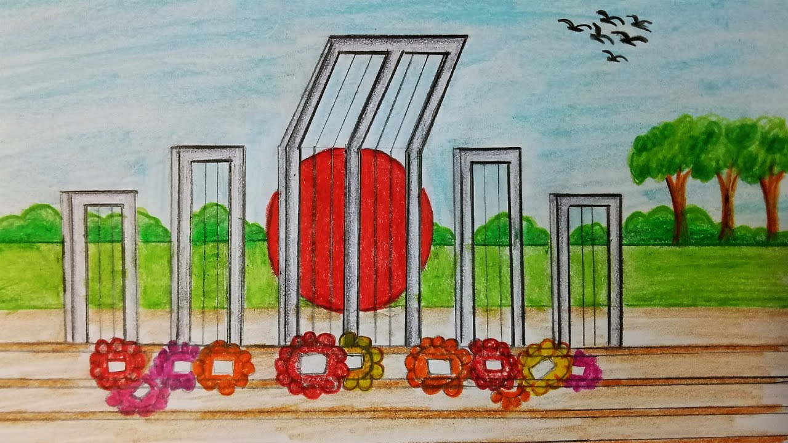

Language Movement:

Language Movement began in 1948 and reached its climax in the killing of 21 February 1952, and ended in the adoption of Bangla as one of the state languages of Pakistan. The question as to what would be the state language of Pakistan was raised immediately after its creation. The central leaders and the Urdu-speaking intellectuals of Pakistan declared that urdu would be the state language of Pakistan, just as Hindi was the state language of India. The students and intellectuals of East Pakistan, however, demanded that Bangla be made one of the state languages. After a lot of controversy over the language issue, the final demand from East Pakistan was that Bangla must be the official language and the medium of instruction in East Pakistan and for the central government it would be one of the state languages along with Urdu. The first movement on this issue was mobilised by Tamaddun Majlish headed by Professor Abul Kashem. Gradually many other non-communal and progressive organisations joined the movement, which finally turned into a mass movement.Meanwhile, serious preparation was being taken in various forums of the central government of Pakistan under the initiative of Fazlur Rahman, the central education minister, to make Urdu the only state language of Pakistan. On receipt of this information, East Pakistani students became agitated and held a meeting on the Dhaka University campus on 6 December 1947, demanding that Bangla be made one of the state languages of Pakistan. The meeting was followed by student processions and more agitation. The first Rastrabhasa Sangram Parishad (Language Action Committee) was formed towards the end of December with Professor Nurul Huq Bhuiyan of Tamaddun Majlish as the convener.
Details:
The Constituent Assembly of Pakistan was in session at Karachi-then the capital of Pakistan-from 23 February 1948. It was proposed that the members would have to speak either in Urdu or in English at the Assembly. dhirendranath datta, a member from the East Pakistan Congress Party, moved an amendment motion to include Bangla as one of the languages of the Constituent Assembly. He noted that out of the 6 crore 90 lakh population of Pakistan, 4 crore 40 lakh were from East Pakistan with Bangla as their mother tongue. The central leaders, including liaquat ali khan, prime minister of Pakistan, and khwaja nazimuddin, chief minister of East Bengal, opposed the motion. On receiving the news that the motion had been rejected, students, intellectuals and politicians of East Pakistan became agitated. Newspapers such as the Azad also criticised of the politicians who had rejected the motion. A new committee to fight for Bangla as the state language was formed with Shamsul Huq as convener. On 11 March 1948 a general strike was observed in the towns of East Pakistan in protest against the omission of Bangla from the languages of the Constituent Assembly, the absence of Bangla letters in Pakistani coins and stamps, and the use of only Urdu in recruitment tests for the navy. The movement also reiterated the earlier demand that Bangla be declared one of the state languages of Pakistan and the official language of East Pakistan. Amidst processions, picketing and slogans, leaders such as Shawkat Ali, Kazi Golam Mahboob, Shamsul Huq, Oli Ahad, sheikh mujibur rahman, Abdul Wahed and others were arrested. Student leaders, including Abdul Matin and abdul malek ukil, also took part in the procession and picketing. A meeting was held on the Dhaka University premises. Mohammad Toaha was severely injured while trying to snatch away a rifle from a policeman and had to be admitted to hospital. Strikes were observed from 12 March to 15 March.